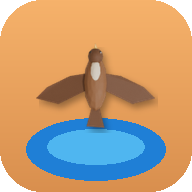

المشاريع

صقر الواحة
لعبة أركيد عربية مجانية: احمِ الواحة من أسراب الجراد. تشتغل في المتصفح بدون تثبيت.
وكيل المراجحة
لوحة مباشرة لتجربة تداول آلية على Polymarket بأموال افتراضية فقط، تتحدث كل نص ساعة تقريباً.
عن تطبيق Tokyo503
تطبيق Tokyo503 أداة داخلية يستعملها صاحب القناة فقط لإدارة قناته على يوتيوب عبر خدمات YouTube API: رفع فيديوهات القناة نفسها، وتحديث عناوينها، وقراءة إحصائياتها. لا يستعمله أحد غيره ولا يطلب بيانات أي شخص آخر.